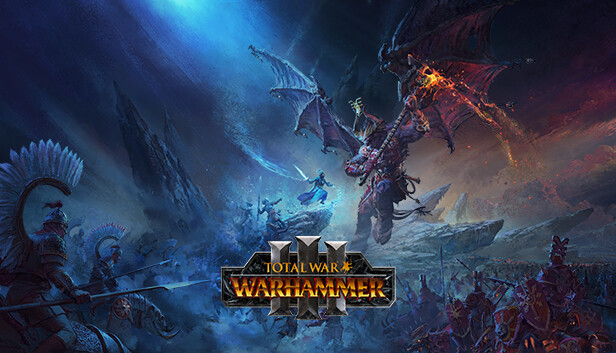
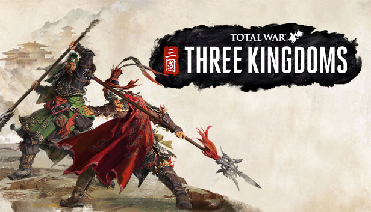
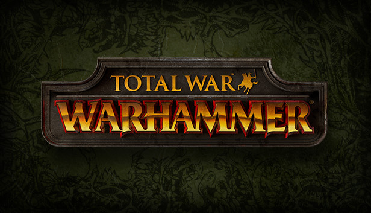

Duygu Cakmak
Award-winning technical leader in games, focused on AI and R&D.
About
I'm R&D Director at Creative Assembly, where I lead the studio's research and AI strategy across the Total War series and beyond. I joined as an AI programmer in 2015 and have since built and led teams across battle AI, campaign AI, and frontier AI for game development. Before R&D, I was Project Technical Director on an unannounced historical Total War title.
Beyond the studio, I work to bring industry and academia closer together. I co-organise Europe's largest AI and Games developer conference, chair the IGGI industry board, advise the GDC AI Summit, and serve as an associate editor at IEEE Transactions on Games.
Featured
Announced at CES — an interactive in-game advisor built with NVIDIA ACE. Read the announcement on Creative Assembly →
Talks & Papers
Selected talks
- 2026 AI, Leaning into the Future (panel). BAFTA Connect, London.
- 2026 Building an AI Assistant for Total War: PHARAOH — NVIDIA ACE Developer Deep Dive (with Ambrish Dantrey, NVIDIA). GDC, San Francisco.
- 2026 Charting a Course for the Next Decade of Gaming With AI (panel, with John Spitzer, Kangwook Lee, Dean Leitersdorf, Trotter Cashion). NVIDIA GTC.
- 2025 Conquering Complexity. Summer School on AI and Games, Cambridge.
- 2023 The Future of AI for Games (panel). Summer School on AI and Games, Cambridge.
- 2021 Technical Direction & AI Complexity in Total War (keynote). IGGI Conference.
- 2021 Intrigue and Betrayal: Diplomacy AI in 'Total War: Three Kingdoms'. GDC AI Summit.
- 2019 How developers analyse AI behaviour in Total War games (with Csaba Toth). IEEE Conference on Games (CoG).
- 2018 Modern C++ in Embedded and Real-Time Systems (with Guy Davidson). ACCU Conference, Bristol.
Interviews & features
- A Games Industry Perspective on Recent Game AI Developments · KI – Künstliche Intelligenz, 2020
- Creative Chronicle: Analysing AI behaviour in Total War · GamesIndustry.biz
- Creative Chronicles: How to become a programmer · GamesIndustry.biz
Papers
- 2026 Onboarding Advisor (auxiliary paper). IEEE Conference on Games (CoG).
- 2025 From Code to Play: Benchmarking Program Search for Games Using Large Language Models (with Eberhardinger et al.). IEEE Transactions on Games, Special Issue on Large Language Models and Games.
- 2025 Learning Combat Outcomes in Creative Assembly's Total War (with James Kwan). AIIDE 2025.
- 2024 Playing NetHack with LLMs: Potential & Limitations as Zero-Shot Agents (with Jeurissen et al.). IEEE Conference on Games (CoG).
Editorial & service
- Co-founder and co-organiser, AI and Games Conference (London) since 2024
- Associate Editor, IEEE Transactions on Games since 2024
- Chair, IGGI Industry Advisory Board since 2023
- Advisor, GDC AI Summit since 2022
Awards
- 2023 Software Engineer Award, everywoman in Technology Awards UK.
- 2019 Technical Impact of the Year, MCV Women in Games Awards.
Released Games
-

Total War: WARHAMMER III2022 -

Total War: THREE KINGDOMS2019 -

Total War: WARHAMMER II2017 -

Total War: WARHAMMER2016
Contact
For speaking enquiries, please reach out via LinkedIn.